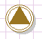

Throw

Topic content
Description
Sends a Signal.
Purpose of object
Another process can be started or reactivated by sending a signal.
Create
1. Create a process model
2.Then point the mouse on "process", as default, this field is on the right side of the Orchestra window.
3.Click on the folder intermediate events to see its content.
4.Click on "throw".
5. Click on any place in your process model.
6. Double click on the throw element to specify the outgoing signal.
Icon

Throw event
Configuration
1. Double click on the throw element to specify the outgoing signal.
2. Choose a process signal from the drop down list in "Throw process signal" tab.
3. Specify event properties in the eponymous tab.